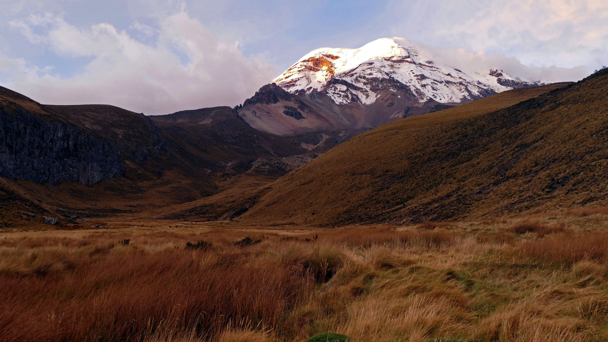
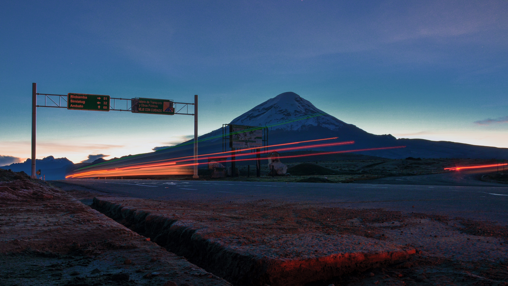

Chimborazo



Chimborazo is the highest summit in Ecuador and the closest point to the sun on Earth. It is even taller than Everest when measured from the core of the Earth. Chimborazo is also a stratovolcano, but it is currently inactive. It is located an hour away from the city of Riobamba in the province of Chimborazo from which it gets its name. The explorer Alexander von Humboldt called the strip of the Andes mountains dividing Ecuador the Avenue of the Volcanoes. Chimborazo sits along it as a reminder of the grandeur of our natural world. A trip to Chimborazo is sure to make you fall in love with nature all over again.